Пятая ежегодная международная
научно-практическая конференция
«Ленин в современном мире»
Пресс-релиз
СБОРНИК ТЕЗИСОВ ВЫСТУПЛЕНИЙ
ФОТОГАЛЕРЕЯ
(Для увеличения — нажмите на фотографию)
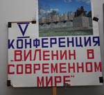
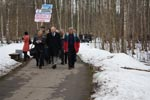
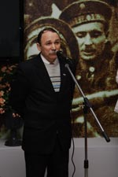
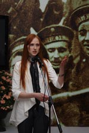
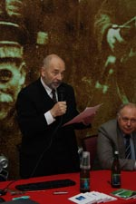
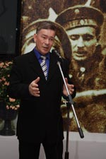
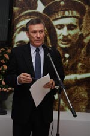
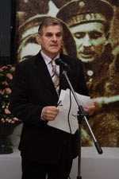
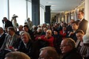
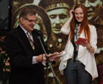
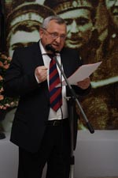
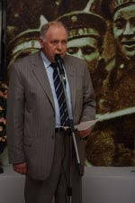
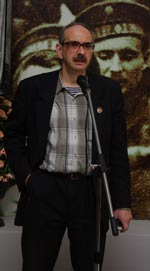
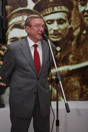
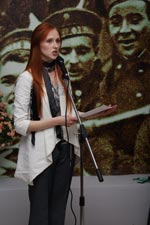
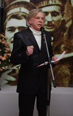
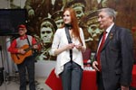
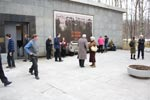
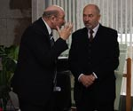
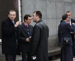
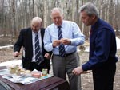
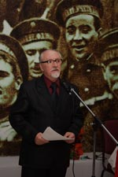
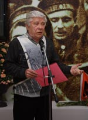
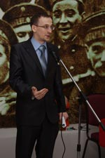
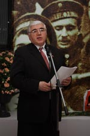
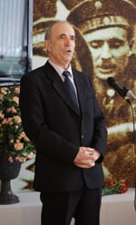
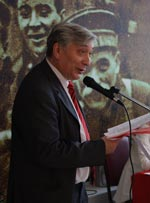
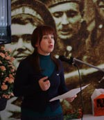
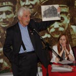
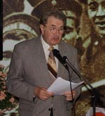
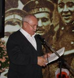
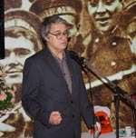
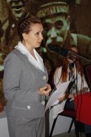
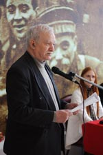
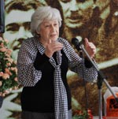
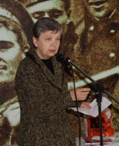
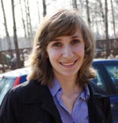
Фото О.Ю.Озеровой
Назад